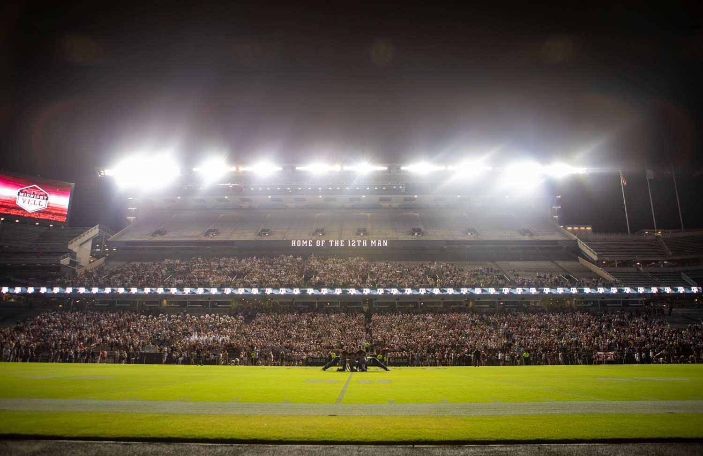

Black out TU
Group Members:Lauren Hamilton, Luis Perez De Leon, Gray Mcgrath, Lauren Morawiec
Date – March 28, 2024
Home Group Members New Traditions Traditions

Luis Perez is a sophomore majoring in Sport Management at Texas A&M University. He currently plays for the Texas A&M Men’s Soccer team. His hobbies include playing soccer, watching sports, watching TV, playing video games, and being physically active. When he graduates, he wants to become a Sports Journalist and start working his way up from high school commentating to the big leagues like ESPN, FOX SPORTS or TUDN. In ten years, he would like to have worked across other countries like Spain, England, and Germany.
The information for each page will be different. You will remove this paragraph and place your information here eventually. You will continue working with the common code for all your pages
Contact me
|